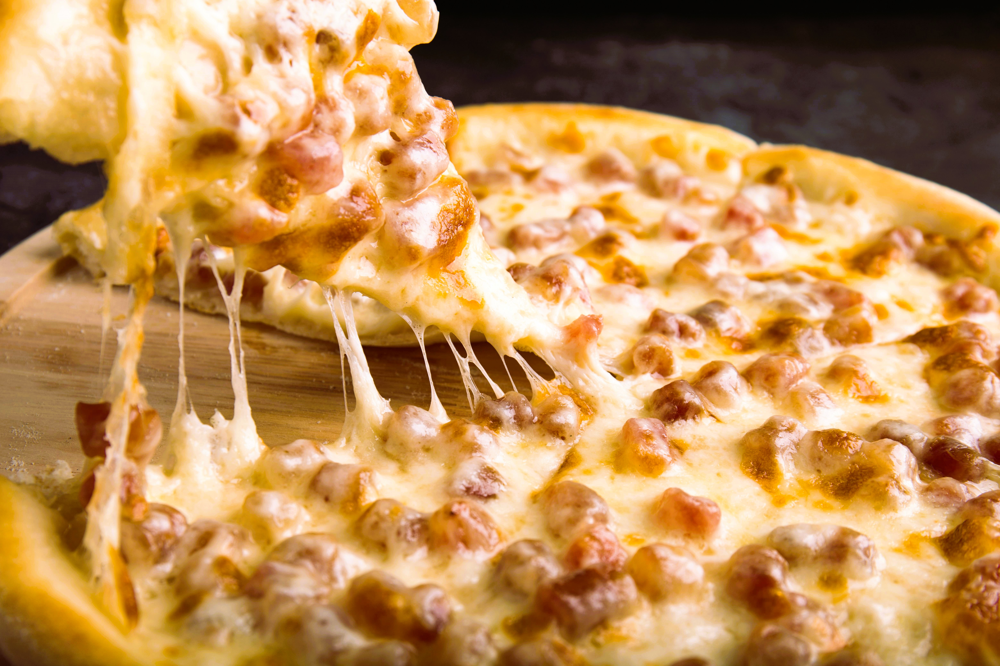

PIZZA

Description
Indulge in the perfect homemade pizza experience with our easy-to-follow recipe, combining a crispy, golden crust
with rich tomato sauce and melted mozzarella cheese. Customize with your favorite toppings to create a delicious, personalized
meal that everyone will love.
Ingredients
Pizza Dough
- 2 1/4 teaspoons active dry yeast
- 1 1/2 cups warm water
- 3 1/2 to 4 cups all-purpose flour
- 2 tablespoons olive oil
- 2 teaspoons salt
- 1 teaspoon sugar
Tomato Sauce
- 1 can (14-16 oz) crushed tomatoes
- 2 cloves garlic, minced
- 1 tablespoon olive oil
- 1 teaspoon dried oregano
- 1 teaspoon dried basil
- Salt and pepper to taste
Cheese
- 2 cups shredded mozzarella cheese
- 1/2 cup grated Parmesan cheese (optional)
Toppings
- Pepperoni slices
- Sliced bell peppers
- Sliced onions
- Sliced olives
- Fresh basil leaves
- Sliced tomatoes
- Pineapple chunks
Other
- Olive oil for brushing the crust
- Cornmeal for dusting the pizza peel or baking sheet
Steps
- In a small bowl, dissolve 2 1/4 teaspoons of active dry yeast and 1 teaspoon of sugar in 1 1/2 cups of warm water.
Let it sit for about 5-10 minutes until it becomes frothy.In a large bowl, combine 3 1/2 to 4 cups of all-purpose flour
and 2 teaspoons of salt. Make a well in the center and add the yeast mixture and 2 tablespoons of olive oil.Mix until
the dough comes together, then turn it out onto a floured surface and knead for about 8-10 minutes until smooth and
elastic.Add more flour if the dough is too sticky.Place the dough in a lightly oiled bowl, cover with a damp cloth
or plastic wrap, and let it rise in a warm place for about 1-2 hours, or until it doubles in size.
- In a saucepan, heat 1 tablespoon of olive oil over medium heat. Add 2 minced garlic cloves and sauté until
fragrant.Add 1 can (14-16 oz) of crushed tomatoes, 1 teaspoon each of dried oregano and basil, and salt and
pepper to taste. Simmer for about 15-20 minutes, stirring occasionally. Let it cool.
-
Preheat your oven to 475°F (245°C). If using a pizza stone, place it in the oven to heat up.
-
Punch down the risen dough and divide it into two equal portions.
Roll each portion into a ball and let them rest for about 10 minutes.
On a lightly floured surface, use your hands or a rolling pin to stretch and shape each dough ball into a circle
about 12 inches in diameter. If the dough is too elastic, let it rest for a few more minutes.
- If using a pizza peel, sprinkle it with cornmeal to prevent sticking.
Transfer the shaped dough to the peel or a baking sheet.Spread a thin layer of the prepared tomato sauce
over the dough, leaving a small border around the edges.Sprinkle 2 cups of shredded mozzarella cheese evenly
over the sauce. Add any desired toppings, such as pepperoni, sliced mushrooms, bell peppers, onions, olives,
etc.
- If using a pizza stone, carefully slide the pizza from the peel onto the stone. If using a baking sheet,
place it in the oven. Bake for about 12-15 minutes, or until the crust is golden and the cheese is bubbly
and slightly browned.
- Remove the pizza from the oven and let it cool for a couple of minutes. Optionally, brush the crust
with olive oil and sprinkle with grated Parmesan cheese or fresh basil leaves.Use a pizza cutter
to slice the pizza and serve immediately. Enjoy your homemade pizza!